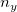
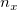
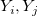
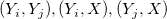
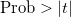

Der partielle Korrelationskoeffizient wird verwendet, um die Beziehung zwischen zwei Variablen bei Vorhandensein von Kontrollvariablen zu beschreiben.
Für einen Satz von  Zufallsvariablen Y und  Kontrollvariablen X kombinieren Sie zwei Sätze von Variablen X und Y. Die Varianz-Kovarianz-Matrix kann ausgedrückt werden mit:
Die Varianz-Kovarianz-Matrix von Y-Variablen für Kontrollvariablen X ist gegeben mit:
Die Matrix der partiellen Korrelationskoeffizient wird berechnet mit:
Ein t-Test kann verwendet werden, um die Hypothese zu testen, dass ein partieller Korrelationskoeffizient 0 ist.
Die Freiheitsgrade sind:
wobei n die Anzahl der Beobachtungen in der Berechnung der vollen Korrelation ist. Für das paarweise Löschen von fehlenden Werten in der Berechnung der partiellen Korrelation von zwei Variablen  bei gegebenen Kontrollvariablen X, ist n die Mindestanzahl der Beobachtungen in den Paaren von  und Paaren in X.
t-Statistik ist:
wobei r der partielle Korrelationskoeffizient ist.
Das beidseitige Signifikanzniveau |t|" alt="\text{Prob}>|t|" class="tex"/> kann berechnet werden mit: